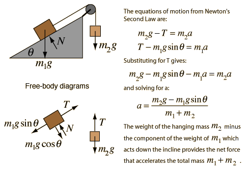
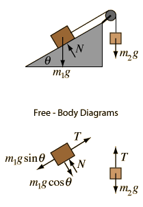

Inclined Pulley

Calculation
Index
Newton's laws
Standard mechanics problems
HyperPhysics
*****
Mechanics
*****
Newton's laws
R Nave
Go Back
Inclined Pulley

Note that the tension in the rope is
NOT
equal to the weight of the hanging mass except in the special case of zero acceleration.
Application of
Newton's second law
to mass on incline with pulley.
Given an incline with angle
degrees which has a mass of
kg placed upon it. It is attached by a rope over a pulley to a mass of
kg which hangs vertically. Taking downward as the positive direction for the hanging mass, the acceleration will be
Acceleration =
m/s²
With this acceleration, the tension in the rope will be
T=
Newtons compared to the weight W =
Newtons for the hanging mass. Exploring different values for the masses will allow you to show that the tension is less than the weight for downward accelerations and greater than the weight for upward accelerations when the net force on the hanging mass must be upward.
Expressions
****
Add friction
Index
Newton's laws
Standard mechanics problems
HyperPhysics
*****
Mechanics
*****
Newton's laws
R Nave
Go Back